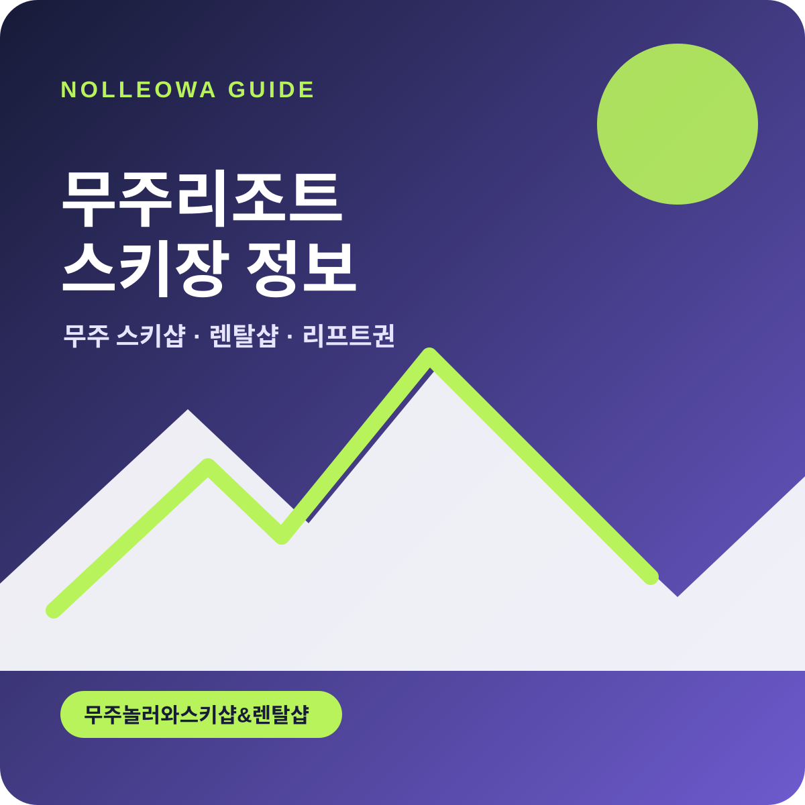

Nolleowa Ski Rental Guide
무주 스키장 정보와 렌탈 가이드
무주놀러와스키샵&렌탈샵이 무주 스키장 방문 전에 필요한 렌탈 품목, 리프트권, 가격 정보를 2026/27 시즌 기준으로 정리합니다.

무주 스키장 한눈에 보기
무주리조트스키장 방문 전 꼭 확인할 정보
무주덕유산리조트 앞에서 장비·의류를 준비하고, 무주스키샵·무주렌탈샵 이용 방법과 리프트권·가격 정보를 순서대로 확인하세요.
렌탈 가이드부터 보기 →방문 전에 확인할 정보
스키·보드 장비와 의류를 무엇을 빌릴지, 리프트권 시간권은 어떻게 선택할지, 예상 비용은 얼마인지 순서대로 확인할 수 있습니다. 가격과 운영 조건은 방문 전 예약 화면에서 다시 확인해 주세요.